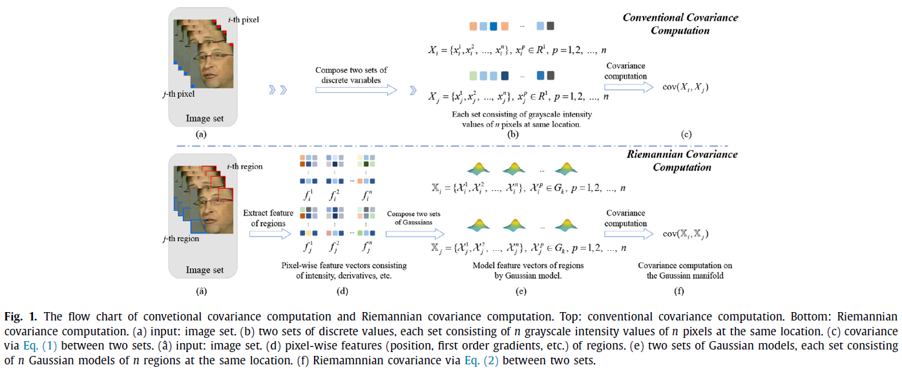
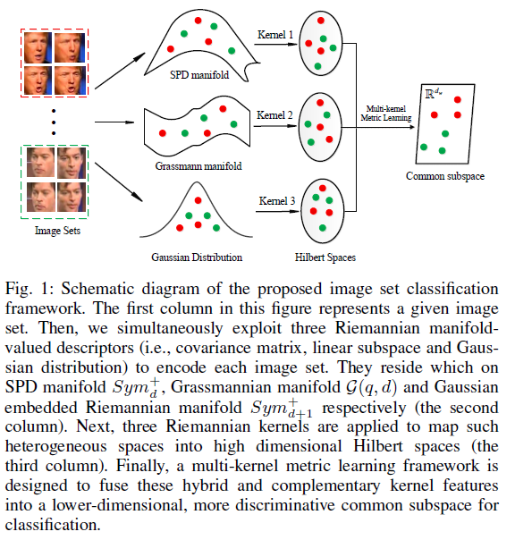

Kai-Xuan Chen @ VIPA, ZJU
 |
陈凯旋 Kai-Xuan Chen (K.-X. CHEN) VIPA Group, Laboratory of Visual Intelligence and Pattern Analysis College Of Computer Science and Technology Zhejiang University, Hangzhou, China. E-mail: chenkx.jsh [at] aliyun.com |
 |
Short Bio
- Kai-Xuan Chen is a Ph.D candidate in the College Of Computer Science and Technology at the Zhejiang University and a member of VIPA Group, led by Prof. Mingli Song. His major research focuses on pattern recognition and representation learning.
- Kai-Xuan Chen received his B.E. degree in software engineering from the Jiangsu University of Science and Technology, Zhenjiang, China, in 2016. From Sept. 2016, He pursued his M.S. degree in computer science under the supervision of Prof. Xiao-Jun Wu, and received the M.S. degree in computer science from Jiangnan University, Wuxi, China, in 2019.
Latest News
05/2020: One paper accepted by Pattern Recognition on Riemannian Covariance Descriptors.
03/2020: One paper accepted by IEEE Trans. on Big Data on Multi-Kernel Metric Learning.
Publications
|  |
To generate Riemannian covariance descriptors, we present two methods to calculate a Riemannian local difference vector on the Gaussian manifold and extend the conventional covariance computation onto a this special type of Riemannian manifold. |
{kind=link}
|  |
To fuse multiple heterogeneous Riemannian Manifold-valued features, we devise a multi-kernel metric learning framework to embed them into a lower dimensional common subspace. |
{kind=link}
Award & Honor
Excellent Doctor Freshmen Award of Zhejiang University, 2020.
Excellent Master Degree Thesis of Jiangnan University, 2020.
Correspondence
Office: Room 404, Guangbiao Cao West Building, Yuquan Campus, Zhejiang University.